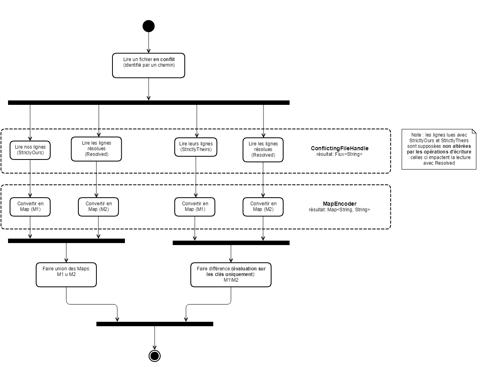

Architecture logique

L'API utilise Mongo pour stocker des métadonnées uniquement. Les vraies données sont lues à partir de repo clonés via l'app. L'API interragit avec Git, mais d'autres VCS devraient pouvoir être implémenté.
Concepts
Côté base de données, on ne garde que les métadonnées des Project/Keyset/Key. Les objects Project, Keyset et Key sont fournis en réponse par l'API Rest (cf Swagger).
{
"state": "Conflict",
"translations": {
"FR": [
"Annuler"
],
"DE": [
"stornieren"
],
"ES": [
"Anular"
],
"EN": [
"Cancel",
"Something else"
]
}
}
Une Key est la donnée d'un état de clé (à traduire = TODO, traduction demandée = INPROGRESS...) et de traductions (correspondance langue et liste de chaînes – la liste comporte une valeur en cas général, et deux quand un conflit survient).
Un Keyset agrège un ensemble de clé ensemble, et fournit quelques données supplémentaires (nom, id, langages pris en compte...). Finalement, un Project agrège divers Keyset.
Côté représentation interne, ProjectMetadata et KeysetMetadata permettent de reconstruire les entités correspondantes.
Le KeysetMetadata donne les chemins des fichiers de traduction qui contiennent les clés d'un Keyset. Par exemple, un fichier va contenir les traductions en anglais et un autre les traductions en allemand, et ce pour les mêmes clés techniques.

Les exports sont gérés via deux entités. L'entité ExportDetails contient l'export CSV ainsi que des métadonnées (sauvées en base) qui permettent de retrouver l'export.
Il faut en effet conserver des infos sur l'export (d'où KeySpec notamment qui redonne le "chemin" complet vers une clé: projet, keyset, identifiant) car l'export ne contient que du texte brute, aucune métadonnée.
Lecture et écriture de fichiers avec gestion de conflits
Remarque. Ici, on utilise le vocabulaire git ou presque, mais l'abstraction devrait pouvoir s'appliquer à d'autres systèmes de versionnement.
Les étapes pour la lecture : (géré par FileHandler)
- lecture des lignes (fichier →
Flux<String>) : assuré parConflictingFileHandle; un drapeau (ConflictFlag) indique si l'on veut lire nos lignes (ConflictFlag.StrictlyOurs) ou les lignes upstream s'il y a des conflits (ConflictFlag.StrictlyTheirs), ou encore les lignes en commun (ConflictFlag.Solved),nullpeut être utilisé au lieu d'un drapeau s'il n'y a pas de conflit; - traduction en dictionnaire (
Flux<String>→Map<String, String>) : unMapEncoder"adapté" (critère : extension du fichier) traduit le flux de lignes en dictionnaire (implémenté : json, properties); - adaptation : opération de diff au niveau des
Mapsselon que l'on veuille lire la version upstream ou la notre, détails ci dessous; - conversion en
Keyset: utilisation deKeyset.fromMapspour obtenir une entité du domaine pour traitement fonctionnel.
Pour l'écriture, c'est l'inverse : Map vers Mono<String> (note : Flux<String> en lecture pour épargner du travail aux formats qui utilisent les sauts de lignes) vers fichier.
Une classe AsyncFile dans le package infrastructure permet de lire les fichiers de manière asynchrone en produisant des flux Reactor.
Remarque. Les
MapEncodersont très simples : ils ne font que de l'encodage et du décodage entre flux de chaînes et dictionnaire. En particulier, ils ne doivent pas décrire plus précisemment le processus de décodage, et ne savent donc pas décoder des fragments de fichiers. Il faut donc lire deux versions distinctes des fichiers, et (re)faire le diff au besoin sur les dictionnaires.
Plus précisemment, la lecture se fait ainsi :
- lecture de notre version : s'il y a des conflits, on lit nos lignes (strictement) + les lignes en commun; sinon on lit juste notre fichier
- lecture de leur patch : on lit leurs lignes (strictement), en retirant ce qui est résolu
En résumé :

Interprétation des drapeaux dans le cas de Git
La lecture se passe ainsi : on lit le fichier, en mappant chaque ligne vers un ConflictMark.
{
"foo": "bar",
<<<<<<< ...
"conflict": "v1",
=======
"conflict": "v2",
>>>>>>>
}
Devient :
ConflictMark.NONE
ConflictMark.NONE
ConflictMark.START
ConflictMark.NONE
ConflictMark.SPLIT
ConflictMark.NONE
ConflictMark.END
ConflictMark.NONE
Puis on répète la marque précédente quand on a NONE.
ConflictMark.NONE
ConflictMark.NONE
ConflictMark.START
ConflictMark.START
ConflictMark.SPLIT
ConflictMark.SPLIT
ConflictMark.END
ConflictMark.END
Ainsi, la lecture avec drapeau StrictlyOurs correspond au lignes mappées vers START, StrictlyTheirs à celles mappées vers SPLIT.
Le drapeau Resolved correspond pour sa part aux lignes mappées vers END ou NONE, ou à la lecture simple d'un fichier de résolution s'il existe.